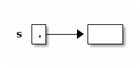
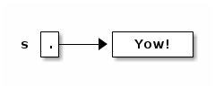
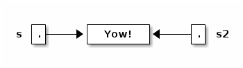
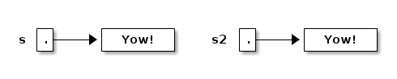
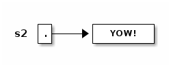
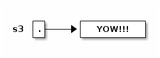
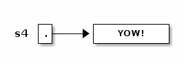

notes2
Table of Contents
Lecture 2
Today's reading: Sierra & Bates, Chapter 2; pp. 54-58, 154-160, 661, 669.
OBJECTS AND CONSTRUCTORS
String s; // Step 1: declare a String variable. s = new String(); // Steps 2, 3: construct new empty String; assign it to s.
At this point, s is a variable that references an "empty" String, i.e. a String containing zero characters.

String s = new String(); // Steps 1, 2, 3 combined. s = "Yow!"; // Construct a new String; make s a reference to it.

String s2 = s; // Copy the reference stored in s into s2.

Now s and s2 reference the same object.
s2 = new String(s); // Construct a copy of object; store reference in s2.

Now they refer to two different, but identical, objects.
Think about that. When Java executes that line, it does the following things, in the following order.
- Java looks inside the variables to see where it's pointing.
- Java follows the pointer to the String object.
- Java reads the characters stored in that String object.
- Java creates a new String object that stores a copy of those characters.
- Java stores a reference to the new String object in s2.
We've seen three String constructors:
- new String() constructs an empty string–it's a string, but it contains zero characters.
- "Yow!" constructs a string containing the characters Yow!.
- new String(s) takes a parameter s. Then it makes a copy of the object that s references.
Constructors always have the same name as their class, except the special constructor "stuffinquotes". That's the only exception.
Observe that "new String()" can take no parameters, or one parameter. These are two different constructors–one that is called by "new String()", and one that is called by "new String(s)". (Actually, there are many more than two–check out the online Java API to see all the possibilities.)
METHODS
Let's look at some methods that aren't constructors.
s2 = s.toUppercase(); // Create a string like s, but in all upper case.

String s3 = s2.concat("!!"); // Also written: s3 = s2 + "!!";

String s4 = "*".concat(s2).concat("*"); // Also written: s4 = "*" + s + "*";

Now, here's an important fact: when Java executed the line
s2 = s.toUppercase();
the String object "Yow!" did not change. Instead, s2 itself changed to reference a new object. Java wrote a new "pointer" into the variable s2, so now s2 points to a different object than it did before.
Unlike in C, in Java Strings are immutable–once they've been constructed, their contents never change. If you want to change a String object, you've got to create a brand new String object that reflects the changes you want. This is not true of all objects; most Java objects let you change their contents.
You might find it confusing that methods like "toUppercase" and "concat" return newly created String objects, though they are not constructors. The trick is that those methods calls constructors internally, and return the newly constructed Strings.
I/O Classes and Objects in Java
Here are some objects in the System class for interacting with a user:
System.out is a PrintStream object that outputs to the screen. System.in is an InputStream object that reads from the keyboard. [Reminder: this is shorthand for "System.in is a variable that references an InputStream object."]
But System.in doesn't have methods to read a line directly. There is a method called readLine that does, but it is defined on BufferedReader objects.
- How do we construct a BufferedReader? One way is with an InputStreamReader.
- How do we construct an InputStreamReader? We need an InputStream.
- How do we construct an InputStream? System.in is one.
(You can figure all of this out by looking at the constructors in the online Java libraries API–specifically, in the java.io library.)
Why all this fuss?
InputStream objects (like System.in) read raw data from some source (like the keyboard), but don't format the data.
InputStreamReader objects compose the raw data into characters (which are typically two bytes long in Java).
BufferedReader objects compose the characters into entire lines of text.
Why are these tasks divided among three different classes? So that any one task can be reimplemented (say, for improved speed) without changing the other two.
Here's a complete Java program that reads a line from the keyboard and prints it on the screen.
import java.io.*; class SimpleIO { public static void main(String[] arg) throws Exception { BufferedReader keybd = new BufferedReader(new InputStreamReader(System.in)); System.out.println(keybd.readLine()); } }
Don't worry if you don't understand the first three lines; we'll learn the underlying ideas eventually. The first line is present because to use the Java libraries, other than java.lang, you need to "import" them. java.io includes the InputStreamReader and BufferedReader classes.
The second line just gives the program a name, "SimpleIO".
The third line is present because any Java program always begins execution at a method named "main", which is usually defined more or less as above. When you write a Java program, just copy the line of code, and plan to understand it a few weeks from now.
Classes for Web Access
Let's say we want to read a line of text from the White House Web page. (The line will be HTML, which looks ugly. You don't need to understand HTML.)
How to read a line of text? With readLine on BufferedReader. How to create a BufferedReader? With an InputStreamReader. How to create a InputStreamReader? With an InputStream. How to create an InputStream? With a URL.
import java.net.*; import java.io.*; class WHWWW { public static void main(String[] arg) throws Exception { URL u = new URL("http://www.whitehouse.gov/"); InputStream ins = u.openStream(); InputStreamReader isr = new InputStreamReader(ins); BufferedReader whiteHouse = new BufferedReader(isr); System.out.println(whiteHouse.readLine()); } }
Postscript: Object-Oriented Terminology (not examinable)
In the words of Turing Award winner Nicklaus Wirth, "Object-oriented programming (OOP) solidly rests on the principles and concepts of traditional procedural programming. OOP has not added a single novel concept … along with the OOP paradigm came an entirely new terminology with the purpose of mystifying the roots of OOP." Here's a translation guide.
| Procedural Programming | Object-Oriented Programming |
|---|---|
| record / structure | object |
| record type | class |
| extending a type | declaring a subclass |
| procedure | method |
| procedure call | sending a message to the method [ack! phthhht!] |
I won't ever talk about "sending a message" in this class. I think it's a completely misleading metaphor. In computer science, message-passing normally implies asynchrony: that is, the process that sends a message can continue executing while the receiving process receives the message and acts on it. But that's NOT what it means in object-oriented programming: when a Java method "sends a message" to another method, the former method is frozen until the latter methods completes execution, just like with procedure calls in most languages. But you should probably know that this termology exists, much as it sucks, because you'll probably run into it sooner or later.